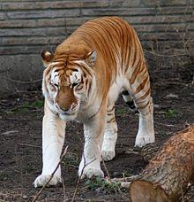
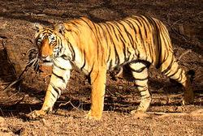
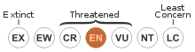
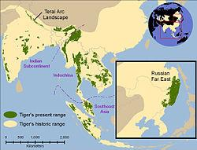

Testing PI:importwiki
Testing import of material from Wiki, This is in an experimental stage and some work remains to be done. The concept of dpath for selecting from a flat documentstructure is not waterproof, but it works on simple constructs.
This page selects material from a Wikipedia-page: http://en.wikipedia.org/wiki/Tiger
A section without references
White tigers
There is a well-known mutation that produces the white tiger, technically known as chinchilla albinistic, an animal which is rare in the wild, but widely bred in zoos due to its popularity. Breeding of white tigers will often lead to inbreeding (as the trait is recessive). Many initiatives have taken place in white and orange tiger mating in an attempt to remedy the issue, often mixing subspecies in the process. Such inbreeding has led to white tigers having a greater likelihood of being born with physical defects, such as cleft palates and scoliosis (curvature of the spine). Furthermore, white tigers are prone to having crossed eyes (a condition known as strabismus). Even apparently healthy white tigers generally do not live as long as their orange counterparts. Recordings of white tigers were first made in the early 19th century. They can only occur when both parents carry the rare gene found in white tigers; this gene has been calculated to occur in only one in every 10,000 births. The white tiger is not a separate sub-species, but only a colour variation; since the only white tigers that have been observed in the wild have been Bengal tigers (and all white tigers in captivity are at least part Bengal), it is commonly thought that the recessive gene that causes the white colouring is probably carried only by Bengal tigers, although the reasons for this are not known. Nor are they in any way more endangered than tigers are generally, this being a common misconception. Another misconception is that white tigers are albinos, despite the fact that pigment is evident in the white tiger's stripes. They are distinct not only because of their white hue; they also have blue eyes.
A section with references, only heading and images
Golden tabby tigers
A section accessed with xpath
| Tiger | |
|---|---|
|  | |
| A Bengal Tiger (P. tigris tigris) in India's Ranthambhore National Park. | |
| Conservation status | |
|

Endangered (IUCN 3.1) |
|
| Scientific classification | |
| Kingdom: | Animalia |
| Phylum: | Chordata |
| Class: | Mammalia |
| Order: | Carnivora |
| Family: | Felidae |
| Genus: | Panthera |
| Species: | P. tigris |
| Binomial name | |
|
Panthera tigris
(Linnaeus, 1758) |
|
| Subspecies | |
|
P. t. tigris
|
|
|  | |
| Historical distribution of tigers (pale yellow) and 2006 (green). | |
| Synonyms | |
|
Tigris striatus
Severtzov, 1858
|
|